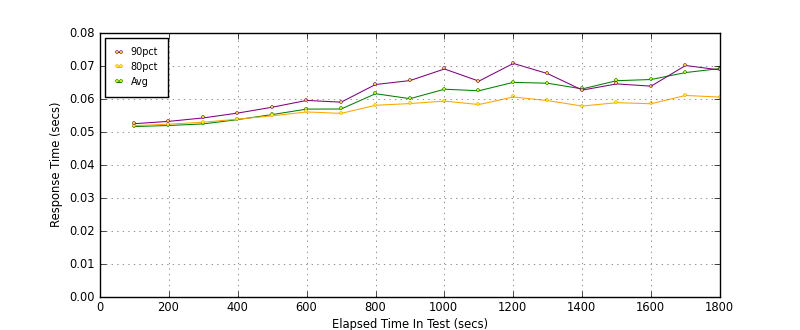
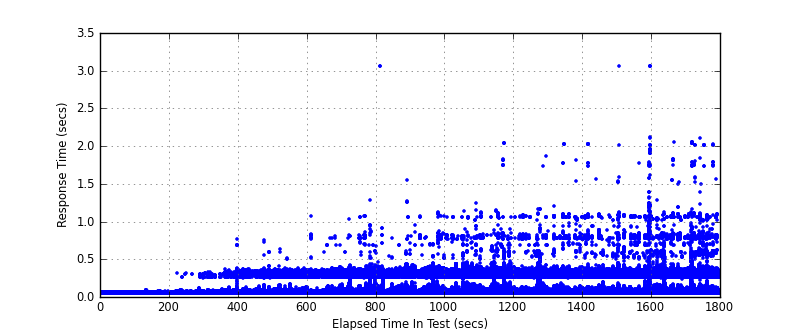
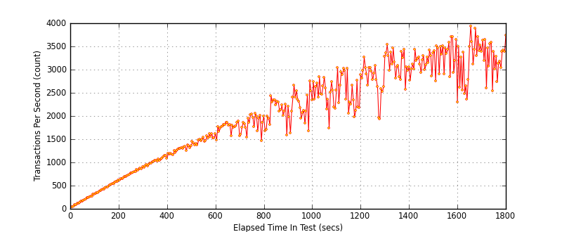
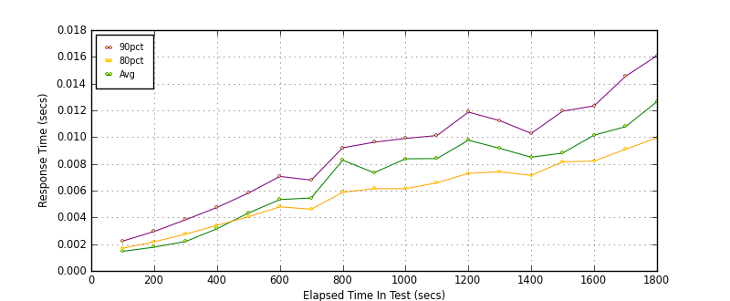
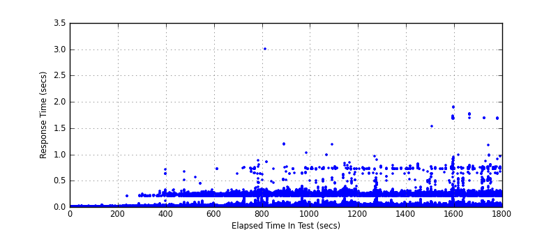
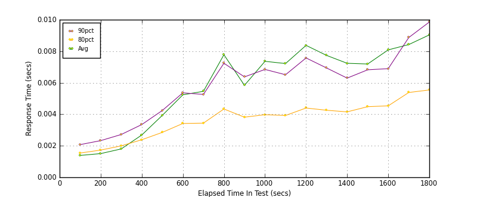
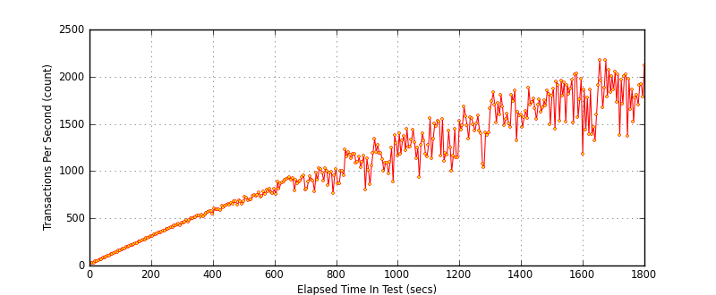

Performance Results Report
Summary
transactions: 3692446
errors: 0
run time: 1800 secs
rampup: 1800 secs
test start: 2010-07-26 14:42:19
test finish: 2010-07-26 15:12:19
time-series interval: 100 secs
workload configuration:
| group name | threads | script name |
|---|
| user_group-2 | 140 | mem_set.py |
| user_group-1 | 140 | mem_get.py |
Notes:
- Membase Server 1.6 Beta 2
- 1 Membase Node
- Node Specs: Ubuntu 10.04 64-bit, 4 CPU, 10 GB RAM, 1 Gbit NIC, VMWare on HP G6
- 1 Client Load Generator (PFTOOLS205)
- Client Specs: Ubuntu 10.04 64-bit, 4 CPU, 10 GB RAM, 1 Gbit NIC, VMWare on HP G6
- Client Lib: python-memcached 1.44
- VU script doing Sets (random key range 1-1000), 30kb string values
- VU script doing Gets (random key range 1-1000)
- .05 sec (50 ms) sleep inside each script/transaction
- Load scales by increasing connections/threads over time (rampup)
All Transactions
Transaction Response Summary (secs)
| count | min | avg | 80pct | 90pct | 95pct | max | stdev |
|---|
| 3692446 | 0.050 | 0.063 | 0.058 | 0.065 | 0.076 | 3.062 | 0.048 |
Interval Details (secs)
| interval | count | rate | min | avg | 80pct | 90pct | 95pct | max | stdev |
|---|
| 1 | 16996 | 169.96 | 0.051 | 0.052 | 0.052 | 0.053 | 0.053 | 0.065 | 0.001 |
| 2 | 46678 | 466.78 | 0.051 | 0.052 | 0.052 | 0.053 | 0.054 | 0.090 | 0.001 |
| 3 | 75690 | 756.90 | 0.051 | 0.052 | 0.053 | 0.054 | 0.056 | 0.316 | 0.004 |
| 4 | 102259 | 1022.59 | 0.051 | 0.054 | 0.054 | 0.056 | 0.058 | 0.763 | 0.014 |
| 5 | 126894 | 1268.94 | 0.051 | 0.055 | 0.055 | 0.058 | 0.061 | 0.745 | 0.020 |
| 6 | 149384 | 1493.84 | 0.051 | 0.057 | 0.056 | 0.060 | 0.065 | 0.624 | 0.025 |
| 7 | 175532 | 1755.32 | 0.051 | 0.057 | 0.056 | 0.059 | 0.064 | 1.068 | 0.027 |
| 8 | 184503 | 1845.03 | 0.051 | 0.062 | 0.058 | 0.064 | 0.076 | 1.275 | 0.040 |
| 9 | 210036 | 2100.36 | 0.051 | 0.060 | 0.059 | 0.066 | 0.076 | 3.062 | 0.034 |
| 10 | 222000 | 2220.00 | 0.051 | 0.063 | 0.059 | 0.069 | 0.084 | 1.115 | 0.043 |
| 11 | 247942 | 2479.42 | 0.051 | 0.062 | 0.058 | 0.065 | 0.078 | 1.243 | 0.043 |
| 12 | 254466 | 2544.66 | 0.051 | 0.065 | 0.061 | 0.071 | 0.087 | 2.037 | 0.050 |
| 13 | 278695 | 2786.95 | 0.051 | 0.065 | 0.060 | 0.068 | 0.084 | 1.859 | 0.049 |
| 14 | 312915 | 3129.15 | 0.051 | 0.063 | 0.058 | 0.063 | 0.072 | 2.019 | 0.049 |
| 15 | 315024 | 3150.24 | 0.051 | 0.066 | 0.059 | 0.065 | 0.076 | 2.020 | 0.055 |
| 16 | 326897 | 3268.97 | 0.050 | 0.066 | 0.059 | 0.064 | 0.076 | 3.055 | 0.063 |
| 17 | 321649 | 3216.49 | 0.050 | 0.068 | 0.061 | 0.070 | 0.090 | 2.048 | 0.059 |
| 18 | 324605 | 3246.05 | 0.051 | 0.069 | 0.061 | 0.069 | 0.090 | 2.101 | 0.068 |
Graphs
Response Time: 100 sec time-series

Response Time: raw data (all points)

Throughput: 5 sec time-series

Custom Timer: GET
Timer Summary (secs)
| count | min | avg | 80pct | 90pct | 95pct | max | stdev |
|---|
| 1759922 | 0.000 | 0.008 | 0.007 | 0.011 | 0.017 | 3.003 | 0.032 |
Interval Details (secs)
| interval | count | rate | min | avg | 80pct | 90pct | 95pct | max | stdev |
|---|
| 1 | 8491 | 84.91 | 0.001 | 0.001 | 0.002 | 0.002 | 0.003 | 0.014 | 0.001 |
| 2 | 23280 | 232.80 | 0.001 | 0.002 | 0.002 | 0.003 | 0.004 | 0.038 | 0.001 |
| 3 | 37695 | 376.95 | 0.001 | 0.002 | 0.003 | 0.004 | 0.005 | 0.214 | 0.003 |
| 4 | 50890 | 508.90 | 0.001 | 0.003 | 0.003 | 0.005 | 0.006 | 0.713 | 0.012 |
| 5 | 63165 | 631.65 | 0.001 | 0.004 | 0.004 | 0.006 | 0.008 | 0.670 | 0.017 |
| 6 | 74450 | 744.50 | 0.001 | 0.005 | 0.005 | 0.007 | 0.010 | 0.562 | 0.020 |
| 7 | 87572 | 875.72 | 0.001 | 0.005 | 0.005 | 0.007 | 0.010 | 0.722 | 0.022 |
| 8 | 91472 | 914.72 | 0.001 | 0.008 | 0.006 | 0.009 | 0.015 | 0.886 | 0.032 |
| 9 | 102732 | 1027.32 | 0.001 | 0.007 | 0.006 | 0.010 | 0.016 | 3.003 | 0.027 |
| 10 | 108853 | 1088.53 | 0.001 | 0.008 | 0.006 | 0.010 | 0.019 | 1.027 | 0.031 |
| 11 | 120879 | 1208.79 | 0.001 | 0.008 | 0.007 | 0.010 | 0.017 | 1.192 | 0.030 |
| 12 | 122825 | 1228.25 | 0.001 | 0.010 | 0.007 | 0.012 | 0.022 | 0.848 | 0.034 |
| 13 | 134123 | 1341.23 | 0.001 | 0.009 | 0.007 | 0.011 | 0.018 | 0.957 | 0.032 |
| 14 | 149427 | 1494.27 | 0.001 | 0.008 | 0.007 | 0.010 | 0.015 | 0.791 | 0.030 |
| 15 | 146780 | 1467.80 | 0.001 | 0.009 | 0.008 | 0.012 | 0.017 | 0.821 | 0.030 |
| 16 | 149290 | 1492.90 | 0.000 | 0.010 | 0.008 | 0.012 | 0.019 | 1.897 | 0.041 |
| 17 | 144629 | 1446.29 | 0.000 | 0.011 | 0.009 | 0.015 | 0.023 | 1.771 | 0.038 |
| 18 | 143369 | 1433.69 | 0.001 | 0.013 | 0.010 | 0.016 | 0.025 | 1.693 | 0.044 |
Graphs
Response Time: 100 sec time-series

Response Time: raw data (all points)

Throughput: 5 sec time-series

Custom Timer: SET
Timer Summary (secs)
| count | min | avg | 80pct | 90pct | 95pct | max | stdev |
|---|
| 1932243 | 0.000 | 0.007 | 0.004 | 0.007 | 0.012 | 3.011 | 0.036 |
Interval Details (secs)
| interval | count | rate | min | avg | 80pct | 90pct | 95pct | max | stdev |
|---|
| 1 | 8505 | 85.05 | 0.001 | 0.001 | 0.002 | 0.002 | 0.003 | 0.014 | 0.001 |
| 2 | 23402 | 234.02 | 0.001 | 0.002 | 0.002 | 0.002 | 0.003 | 0.030 | 0.001 |
| 3 | 37991 | 379.91 | 0.001 | 0.002 | 0.002 | 0.003 | 0.004 | 0.261 | 0.005 |
| 4 | 51373 | 513.73 | 0.001 | 0.003 | 0.002 | 0.003 | 0.005 | 0.633 | 0.013 |
| 5 | 63726 | 637.26 | 0.001 | 0.004 | 0.003 | 0.004 | 0.007 | 0.543 | 0.021 |
| 6 | 74934 | 749.34 | 0.001 | 0.005 | 0.003 | 0.005 | 0.009 | 0.327 | 0.025 |
| 7 | 87959 | 879.59 | 0.001 | 0.005 | 0.003 | 0.005 | 0.009 | 1.018 | 0.028 |
| 8 | 93031 | 930.31 | 0.001 | 0.008 | 0.004 | 0.007 | 0.013 | 1.193 | 0.035 |
| 9 | 107304 | 1073.04 | 0.001 | 0.006 | 0.004 | 0.006 | 0.012 | 3.011 | 0.028 |
| 10 | 113152 | 1131.52 | 0.001 | 0.007 | 0.004 | 0.007 | 0.015 | 1.051 | 0.035 |
| 11 | 127059 | 1270.59 | 0.001 | 0.007 | 0.004 | 0.007 | 0.013 | 1.087 | 0.035 |
| 12 | 131645 | 1316.45 | 0.001 | 0.008 | 0.004 | 0.008 | 0.016 | 1.986 | 0.042 |
| 13 | 144575 | 1445.75 | 0.001 | 0.008 | 0.004 | 0.007 | 0.013 | 1.808 | 0.036 |
| 14 | 163482 | 1634.82 | 0.001 | 0.007 | 0.004 | 0.006 | 0.011 | 1.969 | 0.039 |
| 15 | 168244 | 1682.44 | 0.001 | 0.007 | 0.004 | 0.007 | 0.011 | 1.504 | 0.035 |
| 16 | 177606 | 1776.06 | 0.000 | 0.008 | 0.005 | 0.007 | 0.011 | 2.065 | 0.048 |
| 17 | 177022 | 1770.22 | 0.000 | 0.008 | 0.005 | 0.009 | 0.016 | 1.996 | 0.039 |
| 18 | 181233 | 1812.33 | 0.001 | 0.009 | 0.006 | 0.010 | 0.017 | 1.971 | 0.043 |
Graphs
Response Time: 100 sec time-series

Response Time: raw data (all points)

Throughput: 5 sec time-series

VU Script: mem_get.py
#!/usr/bin/env python
import random
import time
import memcache
NODES = ['192.168.12.171:11211',]
WAIT_TIME = .05
KEY_RANGE = (1, 1000)
class Transaction(object):
def __init__(self):
self.mc = memcache.Client(NODES)
self.custom_timers = {}
def run(self):
key = str(random.randint(*KEY_RANGE))
start_timer = time.time()
self.mc.get(key)
stop_timer = time.time()
self.custom_timers['GET'] = stop_timer - start_timer
time.sleep(WAIT_TIME)
VU Script: mem_set.py
#!/usr/bin/env python
import random
import time
import memcache
NODES = ['192.168.12.171:11211',]
DATA_SIZE = 30000
WAIT_TIME = .05
KEY_RANGE = (1, 1000)
class Transaction(object):
def __init__(self):
self.mc = memcache.Client(NODES)
self.custom_timers = {}
def run(self):
key = str(random.randint(*KEY_RANGE))
data = '*' * DATA_SIZE
start_timer = time.time()
self.mc.set(key, data)
stop_timer = time.time()
self.custom_timers['SET'] = stop_timer - start_timer
time.sleep(WAIT_TIME)